在VSCode中调用Jupyterlab和R
原文：https://mp.weixin.qq.com/s?__biz=MzAwMzIzOTk5OQ==&mid=2247523095&idx=1&sn=69546c915d4c7f33c24b3600a78231ff&chksm=9b3ce247ac4b6b510c8bf60fa8eb69d0d77c369ada147642b2135a4afa7cbc46547c99b0478e#rd 合集：粉丝来稿
01
写在前面
大部分共享服务器没有root权限(当然也有例外：有root权限的共享服务器,报我名字立减200￥)，装不了Rstudio-server。而R终端虽然可以完成一些基本任务，但对于数据分析、画图等高级操作则显得不够便利。因此，我们需要一种能够轻松应对这些任务的IDE。幸运的是，Jupyterlab为我们提供了一个交互式计算环境，让我们可以直接输入代码并立即查看结果。这个功能强大的工具已经成为了数据分析领域的瑰宝，被广泛应用于各种数据分析、可视化等任务中。而VS Code是一个非常流行的编辑器，而且支持多种编程语言和工具。将JupyterLab集成到VS Code中，可以让你在一个统一的开发环境中完成代码编辑、调试和运行等操作，避免了频繁切换不同软件带来的不便。本文书接上回（如何在没有root权限的情况下使用R语言），大家需要先安装并配置好Jupyterlab 。如果你对下面的教程比较迷茫，那么你可以先行学习Linux教程：十小时学会Linux 生信Linux及服务器使用技巧 如果你的计算机不足以支持下面流程的计算，可按需选用适合自己的计算资源：共享(经济实惠)：有root权限的共享服务器,报我名字立减200￥独享(省电省心)：生信分析不求人
实体(稳定高效)：为实验室准备一份生物信息学不动产
访问链接：https://biomamba.xiyoucloud.net/
更多内容可咨询客服微信[Biomamba_kefu]
02
在VScode中使用Jupyterlab和R
首先我们需要安装VScode并远程连接服务器，这些网上教程很多，可以直接参考：https://blog.csdn.net/zhaxun/article/details/120568402https://blog.csdn.net/qq_41646032/article/details/122304257安装完成并连接服务器之后，我们需要安装一些拓展程序：Chinese (Simplified),Python和Jupyter插件：
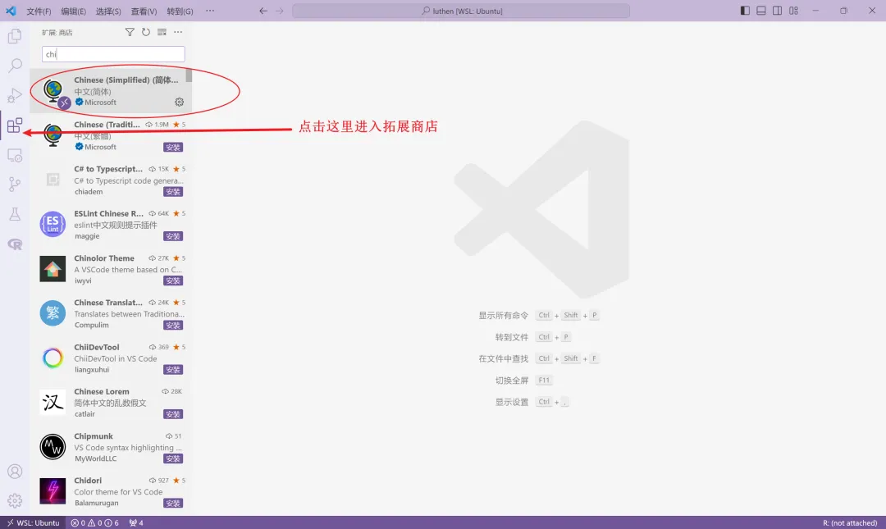
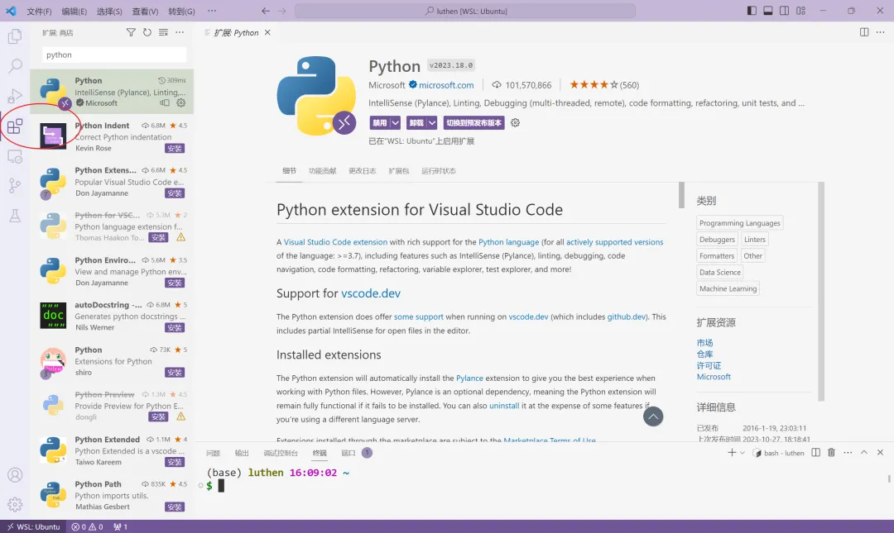
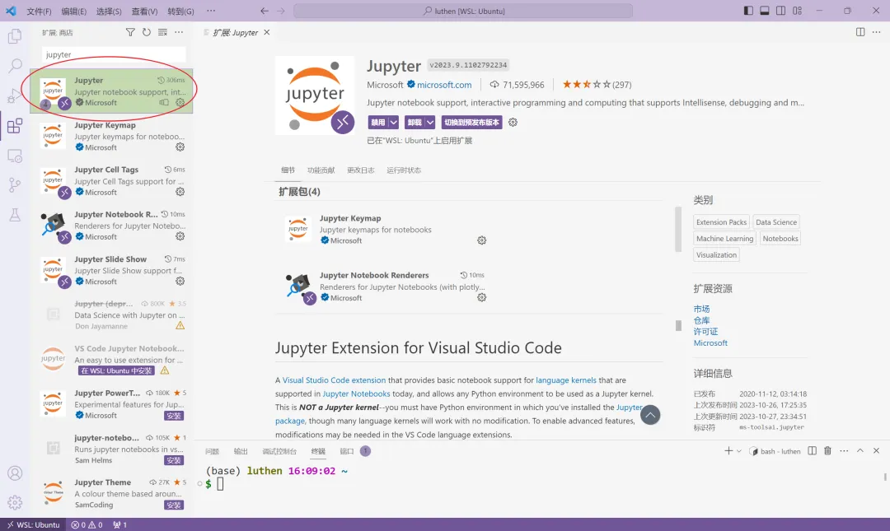
VScode登录上服务器之后,我们可以在终端或者左侧目录中创建文件，然后点开编辑，这里我们之间点开之前创建的Untitled.ipynb：
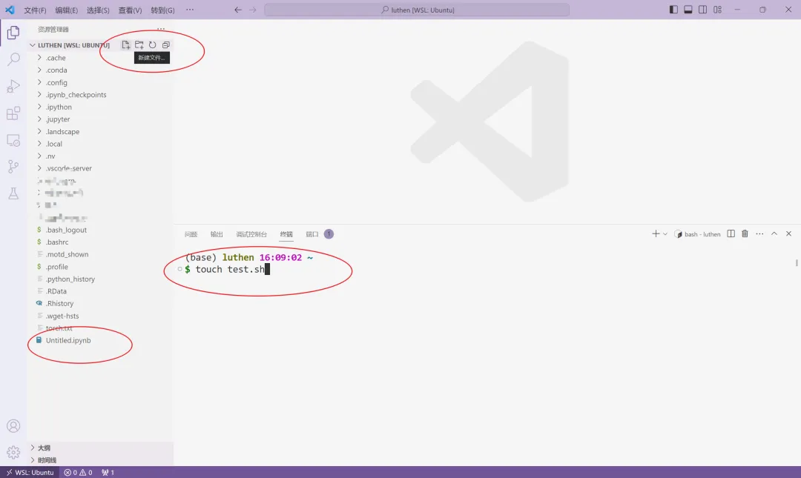
点击选择内核：
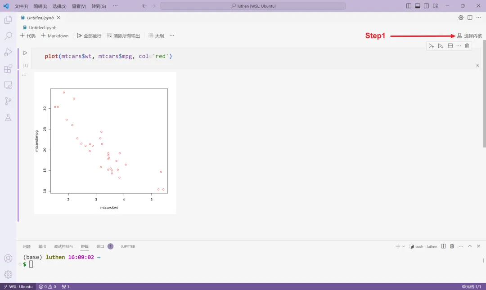
然后点击选择其他内核：
继续点击第二个：
我们就可以看到R环境啦：
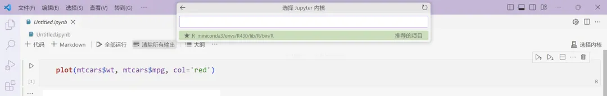
选择之后我们就可以继续在其中运行R代码了,我们先来安装一些基础包：
options("repos" = c(CRAN="https://mirrors.tuna.tsinghua.edu.cn/CRAN/"))if (!require("BiocManager", quietly = TRUE)) install.packages("BiocManager")BiocManager::install(version = "3.18")install.packages("tidyverse")
然而不知道为何，Linux下R包安装经常出现问题，例如：installation of package ‘Rpackage’ had non-zero exit status，这时候我们就需要用conda来安装R包了：
conda install -c bioconda bioconductor-biocinstallerconda install -c conda-forge r-tidyverse
一般直接搜索conda Rpackagename 就能知道具体安装代码了。安装R包之后，我们来运行一下代码啦：
library(tidyverse)ggplot(data = diamonds) + geom_bar(mapping = aes(x = cut, fill = clarity), position = "fill")
结果：
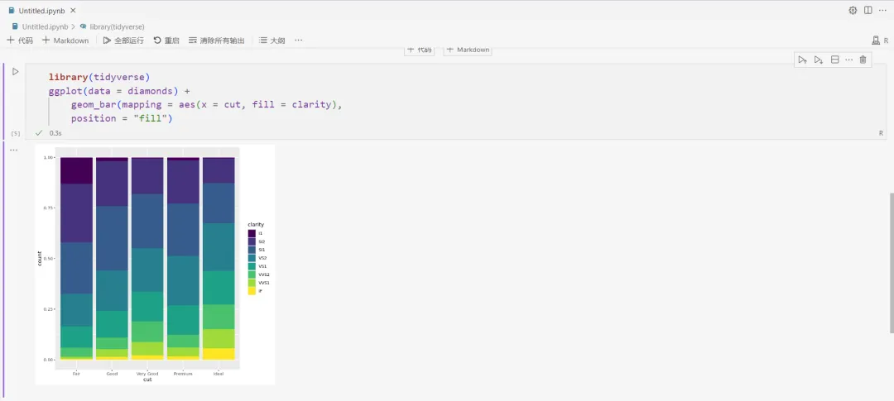
至此，我们就能在VScode的Jupyterlab中方便的使用R啦！接下来，我们还要配置一些设置，来更快捷的使用。
拓展程序安装
虽然目前我们能在Jupyterlab中使用R了，但是实际用的时候会发现代码补全和一些快捷键不方便，而Rstudio中各种辅助配置非常完善了。这时候我们就需要VScode中的一些插件来方便我们写代码。我们直接在左侧的拓展中搜索R，然后安装即可。
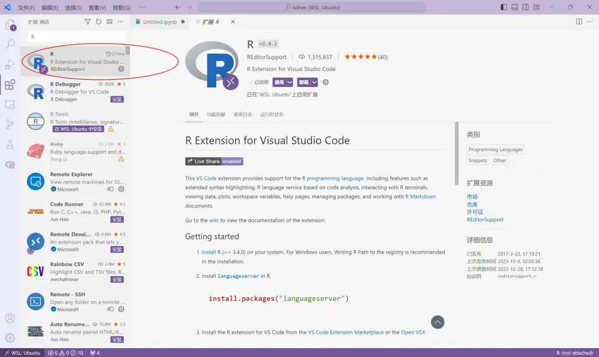
之后我们再打开jupyter文件，就会发现一些快捷键比如Alt+-，Ctrl+Shitf+M都能使用了！ 然后还有一些实际颜色显示：
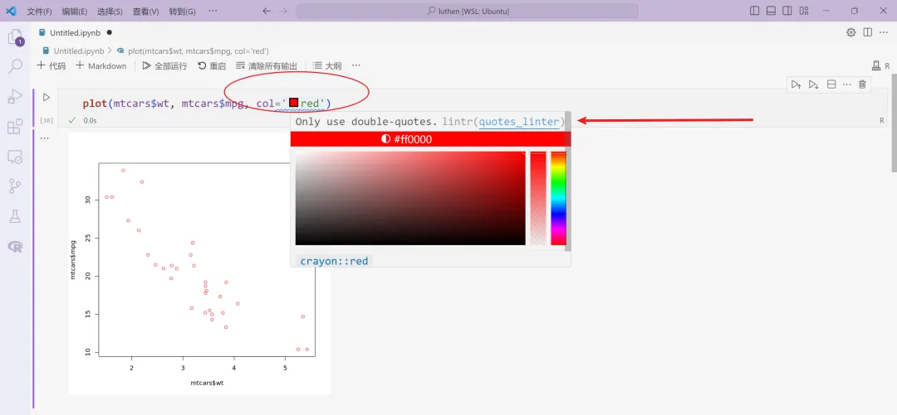
这就和最新版的Rstudio非常像了！然后是代码补全：
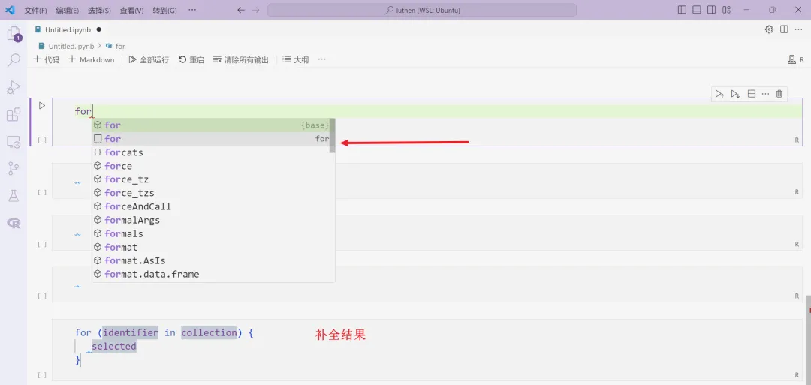
当我们把鼠标放到函数上时，还能看到帮助文档：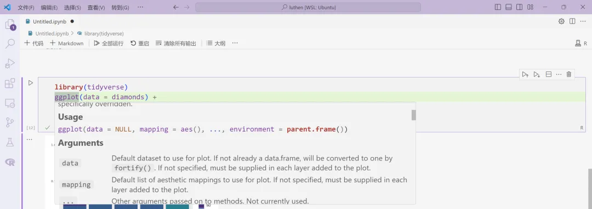
如果需要直接在jupyter中安装R的内核，可以直接在终端打开的R中进行操作：
- *
install.packages('IRkernel')IRkernel::installspec()
这样内核中就会多一个R可以选择：
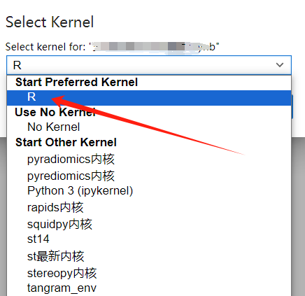
这样，我们实际使用就非常Nice了！
总结
总的来说，R语言的IDE中，Rstudio是最为常用和流行的。而JupyterLab则更多地被应用在Python数据分析领域。但是，VS Code也是一个非常强大的编辑器，通过安装一些插件，可以实现很多功能。在本文中，我们介绍了如何通过安装插件，在VS Code中远程连接服务器，并愉快地开始编写Python和R代码。此外，VS Code还有许多其他有用的插件，比如黑暗模式、调试、语法高亮等等，需要进一步探索和使用。

如何联系我们

 公众号后台消息更新不及时，超过48h便不许回复读者消息，这里给大家留一下领取资料及免费服务器(有root权限的共享服务器)的微信号 ，方便各位随时交流、提建议（科研任务繁重，回复不及时请见谅）。此外呼声一直很高的交流群 也建好了，欢迎大家入群讨论：永久免费的千人生信、科研交流群大家可以阅读完这几篇之后添加给生信入门初学者的小贴士
如何搜索公众号过往发布内容
公众号后台消息更新不及时，超过48h便不许回复读者消息，这里给大家留一下领取资料及免费服务器(有root权限的共享服务器)的微信号 ，方便各位随时交流、提建议（科研任务繁重，回复不及时请见谅）。此外呼声一直很高的交流群 也建好了，欢迎大家入群讨论：永久免费的千人生信、科研交流群大家可以阅读完这几篇之后添加给生信入门初学者的小贴士
如何搜索公众号过往发布内容
 您点的每个赞和在看，我都认真当成了喜欢
您点的每个赞和在看，我都认真当成了喜欢